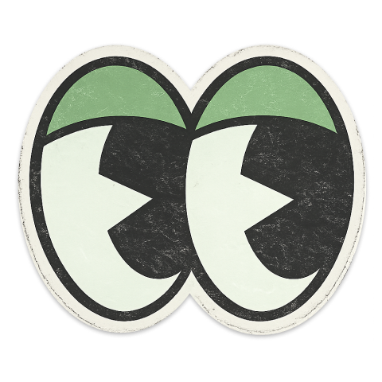
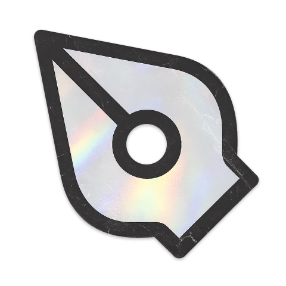
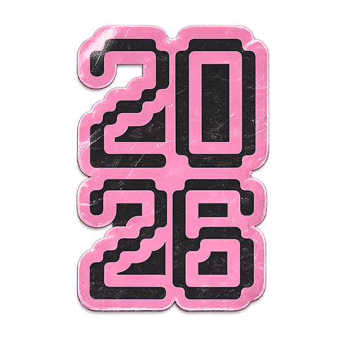
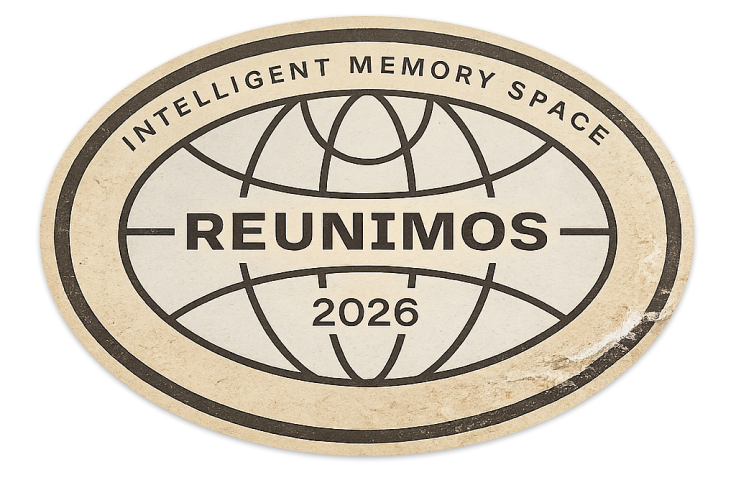
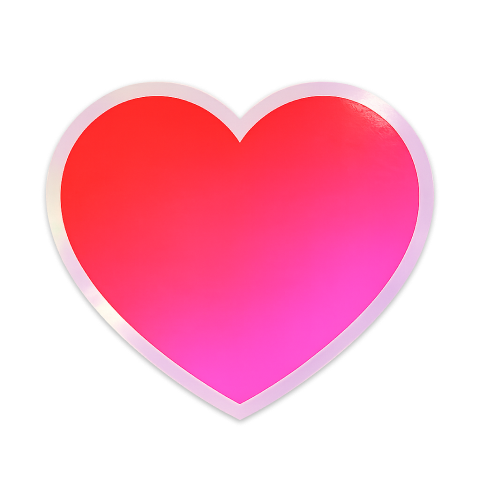
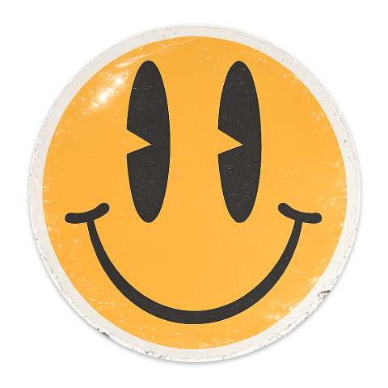
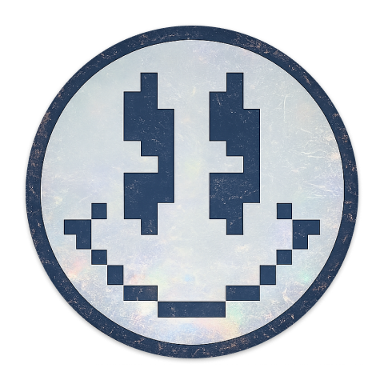

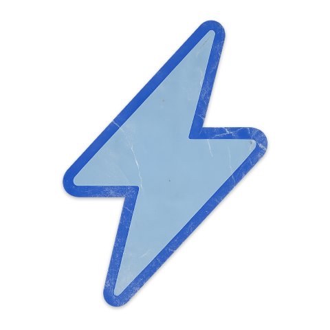
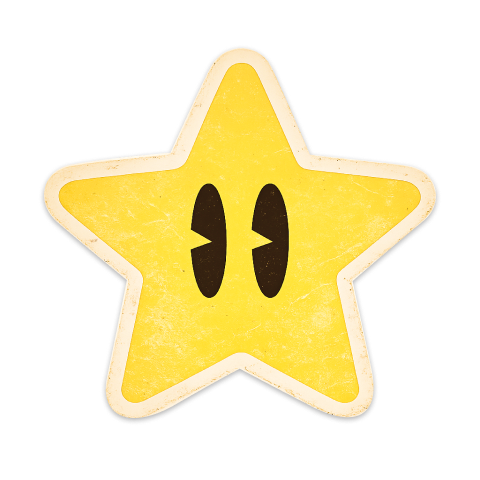
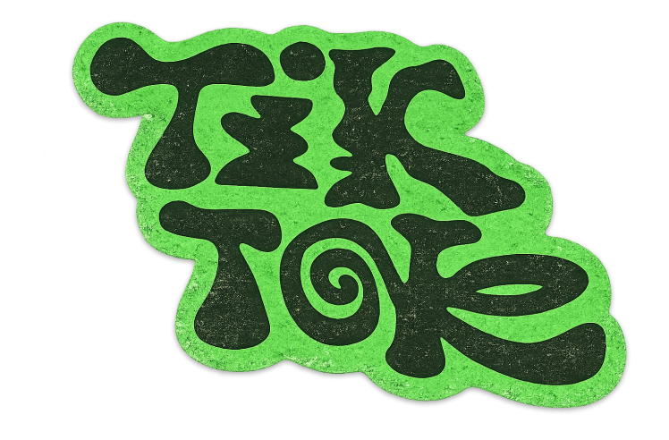
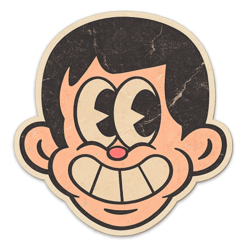
DESIGN
UI/UX
ART
UI/UX 设计 · Systems Thinking
系统化思考 用心设计
向下滚动
载入 3D…
我是 加糖
UI/UX 设计师
专注于数字产品的体验设计与系统化构建。以工艺与品味赋能每一个数字产品，探索 AI 时代下的设计工作流与体验创新。
以 工艺 与 品味 赋能数字产品
探索如何以工艺与品味，重塑 AI 时代的设计工作流，构建下一代数字产品。
精选作品 / Selected Work
有目的的创新